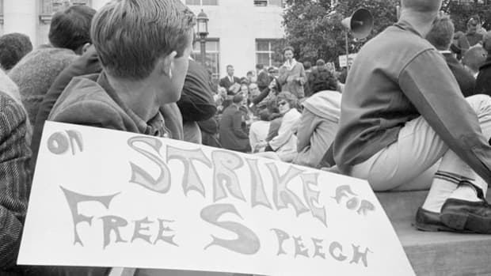
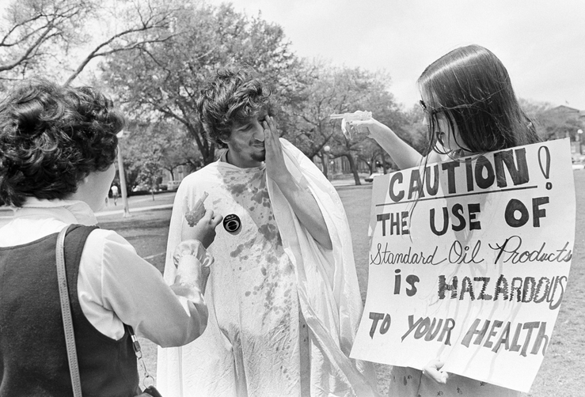
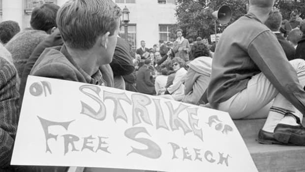
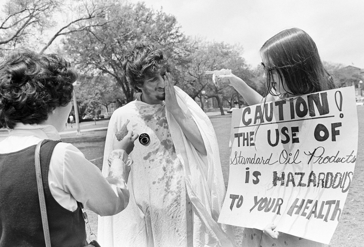

Is the First Amendment really coming first?
Watching the news, it is easy to imagine that college campuses have become synonymous with protest, violence, and the oppression of free speech. Is there actually evidence to show that support for free speech is dwindling on America's college campuses?


What is the First Amendment?
Congress shall make no law respecting an establishment of religion, or prohibiting the free exercise thereof; or abridging the freedom of speech, or of the press; or the right of the people peaceably to assemble, and to petition the Government for a redress of grievances.
In the summer of 1787, politicians gathered in Philadelphia to draft a new Constitution. Part of this new Constitution was the Bill of Rights, a bill that would safeguard basic civil rights. This Bill consisted of 10 rights and became the first ten amendments of the US Constitution. The Bill of Rights was introduced to Congress in 1789 and adopted on December 15th, 1791.
The First Amendment protects the freedoms of speech, assembly, religion, petition, and the press. This does not mean there are not reasonable restrictions. Speech provoking action that may directly harm people, such as making specific threats or shouting fire in a theatre, is not protected. Additionally, the press cannot make false statements, known as libel. Freedom of Religion means that states cannot have a state religion nor can they promote one religion above any others. Finally, Right to Assembly and Petition can cover anything from signing a petition to filing a lawsuit against the government.
Would the First Amendment Protect You From This?

 



The Free Speech Movement, Berkeley
Who gets to speak?
You've probably heard about speakers being protested or shut down, especially on college campuses, for their controversial views. Over time, attitudes about allowing people with different opinions to speak has changed. The General Social Survey asks people from different backgrounds and age ranges from around the United States questions about social issues. Some questions are about attitudes towards free speech, and more specifically, whether people with different views should be allowed to speak.
- attitudes towards different speakers has improved over time. For every kind of speaker, by the most recent survey, more than 60% of respondents would allow them to speak.
- When you split by females are less likely to allow someone controversial to speak.
- Contrary to the belief that college students are hate free speech, those with a tend to allow controversial speakers more often than those with no degree.
- People who are older in tend not to allow speakers as much as young people. This means that as people age they tend to allow different views to be shared less often.
- The difference between opinions of people with different is small, but the most tolerant of these speakers tends to be republicans.
Are college administrators protecting free speech?
The Foundation for Individual Rights in Education ranks colleges according to how the college's administrators allow free speech on campus. A college ranked red has one or more policies that substantially and clearly restrict free speech. An example of this would be having a blanket ban on 'verbal abuse'. A college colored white college has one or more policies that inhibit free speech, but on a much smaller scope, like banning posters that mention drink or drugs. Blue colleges have a hands off approach to free speech. However, this does not mean the college encourages free speech or that its students support free speech.
- Only 10% of colleges have a blue ranking (with 58% ranking as white and 32% as red) overall.
- Only one Ivy League college, the University of Pennsylvania, was ranked blue. Harvard was ranked red.
- Private colleges were twice as likely to be ranked red than public colleges - 50.5% versus 24.7%. This may be because private colleges have a right to restrict speech but since public colleges receive federal funding, they are held to a higher standard when protecting the Constitution.

Are speaker disinvitations common?
Each circle represents a speaker who was petitioned against by the student body at a college they were invited to speak at. Click on the buttons to learn more about their disinvitations to speak, or hover on each circle to see which speaker, college, and year it represents.
Are today's colleges any more adverse to free speech? Not really.
Whilst it may seem from constant news reports that college students today are more adverse to free speech, that is not the case. In fact, overall attitudes to free speech have improved over time and those who are old are less likely to permit controversial speakers. However, colleges are implementing more and more free speech restricting policies. Those that are trying to shut down speakers are doing so in more violent means than ever before, requiring colleges to cater to their needs and spend hundreds of thousands of dollars on security.
Unlike in previous generations, the majority of students are pro-free speech, but a dangerous and sometimes violent minority may be controlling the discussion about the First Amendment on US campuses.
There have been proposals to reduce federal aid to institutions that do not uphold the First Amendment, but this unfairly harms students and gives the government more control over colleges.
We think the best system is for the silent majority to step out of the shadows, to support the invitations of controversial speakers, whilst protesting what they disagree with. It must be made clear that there is a large difference between giving someone the ability to speak and agreeing with what they say.
Produced by Olivia Bryant and Emily Shoemaker as part of the final project for CS171.
With thanks to Nam Wook Kim for continued support as our Teaching Fellow to all of the CS171 staff.
GitHub, including data, can be found here. Process Book